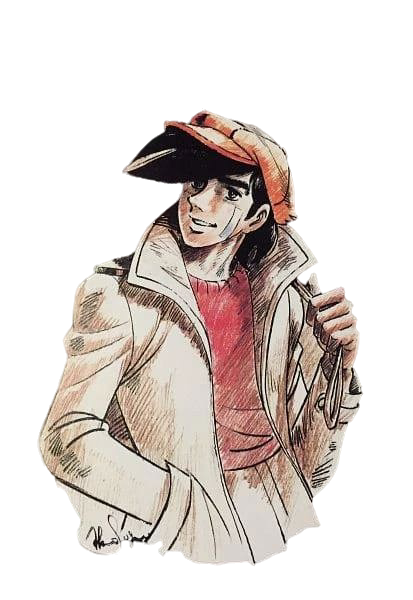

Nombre: Joe Yabuki
Apodos: El Mensajero Del Infierno, Niño Salvaje, El Luchador, Parca
Protagonista de "Ashita no Joe"
Edad: 15-16 (Al comienzo de la serie), 20-21 (Final de la serie)
Boxeador profesional
Adquirió Demencia pugilística al final de su carrera